4. 1차 시스템의 응답
완전한 제어 시스템을 다루기 전에 제어시스템의 블록을 구성하는 몇 개의 간단하고 기초적인 시스템을 잘 알아야 한다. 이 장과 다음 3개의 장에서 몇 개의 기초 시스템을 구체적으로 다루게 되며, 많은 물리적 시스템들은 이들 기초 시스템들을 결합하여 얻을 수 있음을 알게 될 것이다.
먼저 수은 온도계를 분석하는 예제를 통해 전달함수라는 개념을 알아보도록 하자.
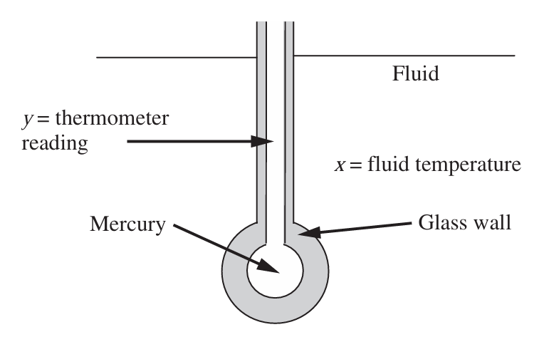
수은 온도계를 온도 x가 시간에 따라 변하는 유체의 흐름에 설치하였다. x의 어떤 변화에 따라 온도 측정치 y의 시간에 따른 변화, 즉 응답을 계산하여보자. 온도계가 처음에는 정상상태라고 가정한다. 이후 주위온도 x(t)가 시간에 따라 점점 변하기 시작하며 이때 비정상상태 에너지 수지는 다음과 같다.
입력속도-출력속도=축적속도
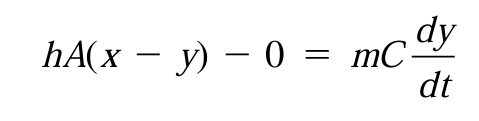
이 식은 외부에서 수은 온도계 내부로 열이 전열됨을 나타내며 이것으로 내부에너지가 증가함을 나타낸다. 그 결과 수은기둥의 높이이자 온도계 읽음 수치인 y값이 증가하게 된다. 경막계수 h는 일정하다고 가정한다.
이제 정상상태일 때 이 식을 적용해보자.
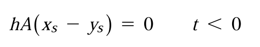
정상상태일 때는 축적이 없으므로 위와같이 된다. 이제 이 두 식의 차를 구해보자. 그 이유는 편차변수를 정의하기 위함으로, 곧 알게된다.
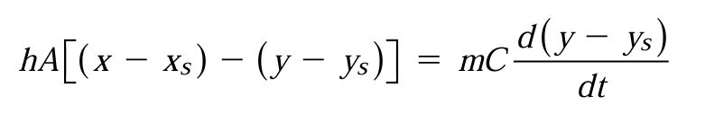
여기서 다음과 같은 편차변수를 정의한다.
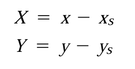
그러면 식은 다음과 같이 간단해진다.
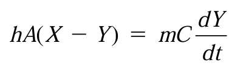
이제 시간상수 타우를 다음과 같이 정의하여 식을 간략화해보자.
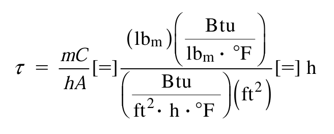
최종식은 다음과 같다.
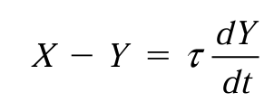
이제 이를 라플라스 변환을 해보자.
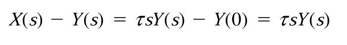
여기서 편차변수를 정의했으므로 Y(0), X(0)는 0이 된다.
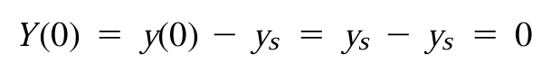
이것이 시스템 변수를 편차변수로 두는 이유이다. 계산을 상당히 편하게 해준다. 편차변수란 정상상태 값에서의 차이를 의미한다.
이제 전달함수를 구해보자. 전달함수는 다음과 같이 구한다.
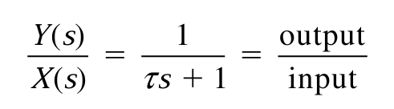
이것은 출력/입력의 라플라스 변환의 비율이다.
어떤 공정의 전달함수를 계산하는 절차를 요약하면 다음과 같다.
1)물질 수지, 에너지 수지를 활용하여 수지식을 만든다.
2)필요하면 선형화 시킨다(다음장에서 소개)
3)편차 형태로 정리한다.
4)이를 라플라스 변환한다.
5)변환식의 Y를 X로 나누어 전달함수를 계산한다.
이 절차는 어떤 공정의 전달함수를 계산하는 데 매우 유용한 요약이다.
2.1차 전달함수의 표준형
한편, 전달함수가 1차인 시스템을 1차계라고 한다. 위의 수은 온도계역시 1차계이다.
1차시스템의 일반형은 다음과 같다.
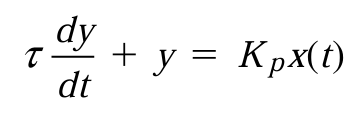
여기서 초기조건은
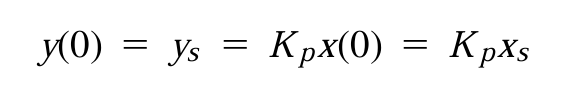
(초기에는 축적이 없기 때문이다.)
편차변수를 사용하여 나타내면
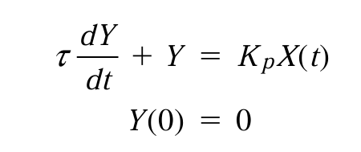
이를 라플라스 변환하면
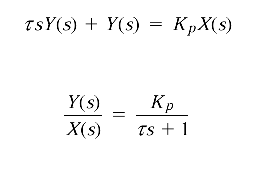
위와 같은 전달함수를 얻게 된다. 표준형의 중요한 특성은 다음과 같다.
-분모의 s항의 계수는 시스템의 시간상수 τ이다.
-분자는 정상상태 이득 Kp이다.
여기서 정상상태 이득이란 단위 계단함수를 입력으로 사용했을 때, 시스템이 교란된 후 정상상태에 도달했을 때 얻어지는 최종치이다. 간단히 전달함수에 S=0을 넣었을 때 값으로 정의된다.
이제 이러한 1차 시스템의 전달함수를 가지고 어떤 입력함수에 대한 과도응답( 변화하는 입력에 대한 시스템의 초기반응)을 구해보자. 4가지 공통적인 함수(계단함수, 임펄스 함수, 경사함수, sin 함수)에 대하여 응답을 살펴볼 가치가 있다. 이들은 앞으로의 학습에 매우 많이 사용될 것이다.
1)계단응답
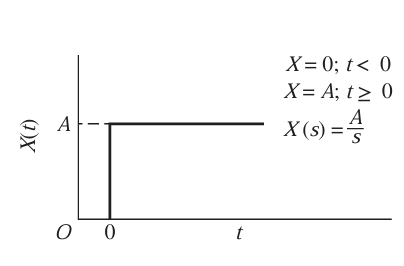
계단응답은 위와 같은 모양을 띈다. 라플라스 변환폼 X(s)=A/S이다. 이때 출력함수는 다음과 같다.
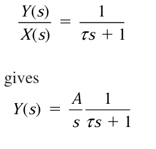
이를 부분분수 분해하여 역변환하면 다음과 같은 출력함수를 얻을 수 있다.
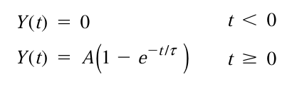
이 응답의 경우 다음과 같은 특성을 가진다.
1.시간이 시간상수 τ만큼 지났을 때, 출력은 최종치의 63.2%에 도달하게 된다. 또한 3~4 τ에 도달하면 95%, 98%의 최종치를 가지며 보통 이때 응답이 완료된 것으로 간주한다.
2.원점에서의 기울기는 원점과 ( τ,최종치)를 이은 값과 같다.
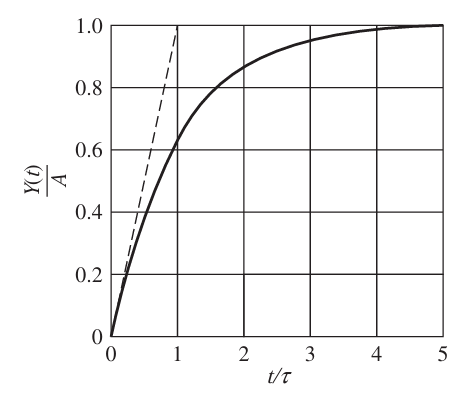
이를 이용한 예제를 한번 풀어보자. 시간상수가 0.1min인 온도계가 90F의 정상상태에 있다. t=0에서 온도계를 100F의 수조에 넣었을 때 온도계가 98F에 이르는 시간은 얼마나 걸리겠는가?
이때 각 기호는 다음과 같다. 크기가 +10의 계단 변화가 가해졌으므로 A=10이다.
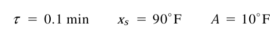
이때 우리는 편차변수를 써야하므로, 98F라는 것은 Y값이 8임을 의미한다. 따라서 다음 식에서
값을 대입하면 다음과 같다.
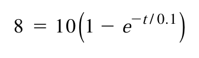
이때 t값을 계산하면 0.161min이 얻어진다.
2)임펄스 응답
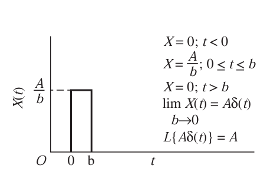
임펄스 응답은 한 점에 집중적인 충격이 가해지는 함수로, 라플라스변환시 크기인 A값이 도출된다. 여기서는 단위 임펄스 함수, 즉 크기가 1인 임펄스 입력을 줬다고 가정하자. 그 경우 출력은 다음과 같다.
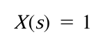 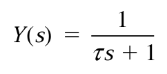
이를 역변환해보면 다음과 같다.
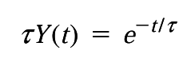
이를 그래프로 도시해보면
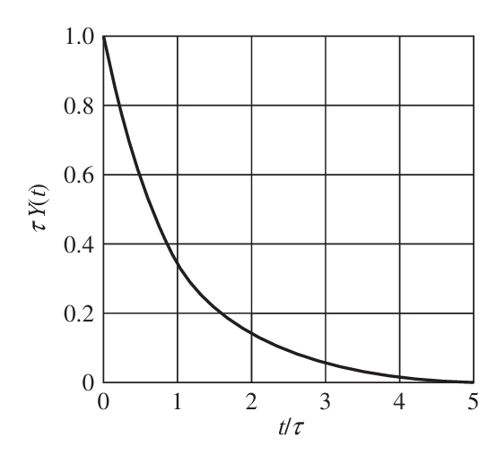
응답은 초기에 최댓값 1에 도달하게 되며 이후 지수적으로 감소하게 된다. 크기 A인 임펄스 응답은 위 그림의 y축 값에 A/τ를 곱해서 얻는다.
3)경사응답
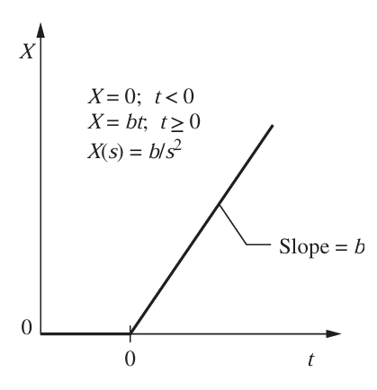
경사응답은 위와 같으며 이것을 공정 이득 Kp가 1인 시스템에 줄 경우 출력함수는 다음과 같다.
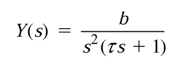
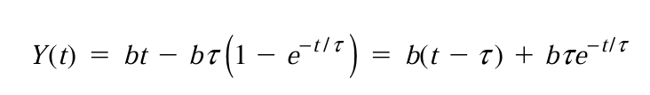
이것을 그래프로 도시하면 다음과 같다.
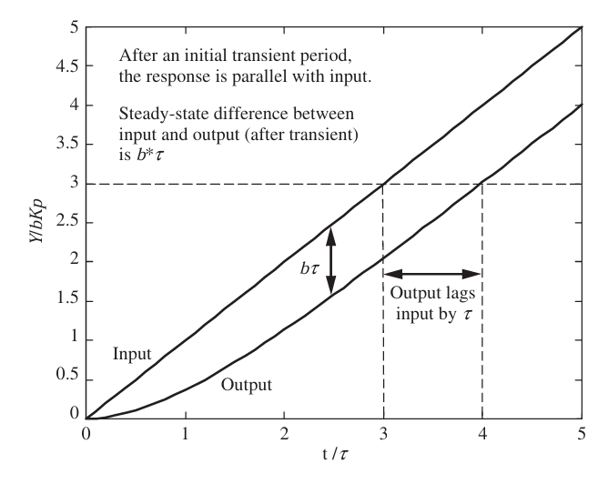
초기의 전이구간 이후 출력은 입력과 평행하게 된다., 이 때 기울기는 K이며 (여기서는 1) 출력은 입력에 τ만큼 뒤지게 된다. y값의 차이는 bτ와 같다.
만약 단위경사응답을 줬다면 다음과 같이 b가 1로 바뀌게 된다.
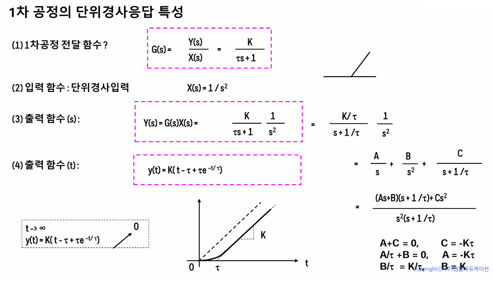
요약: 이 장에서는 수은 온도계를 분석하는 예제를 통해 1차 시스템이라는 것에 대해 알아보고, 이것의 전달함수의 표준형을 이끌어내었다. 각 응답이 주어졌을 때 전달함수를 통해 출력함수의 라플라스폼을 알아내고, 이를 역변환하여 출력함수를 구하는 방법을 알아내었다.
*1차 시스템 전달함수의 표준형
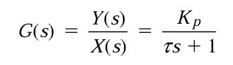
*편차변수: 공정 시스템 변수와 정상상태 값의 차이이다. 전달함수는 반드시 편차변수로 정의되어야 한다. 편차변수는 초기치가 0이기 때문에 편리하다.
*공정용 전달함수를 알아내는 절차
1)적당한 수지식을 만든다
2)필요하면 선형화시킨다
3)편차 형태로 정리한다
4)선형 수지식을 라플라스 변환시킨다
5)출력/입력을 계산한다.
*각 입력에 따른 출력
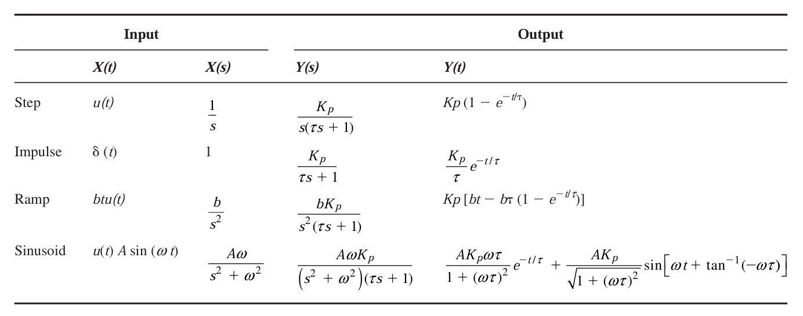
각각의 그래프는 다음과 같다.
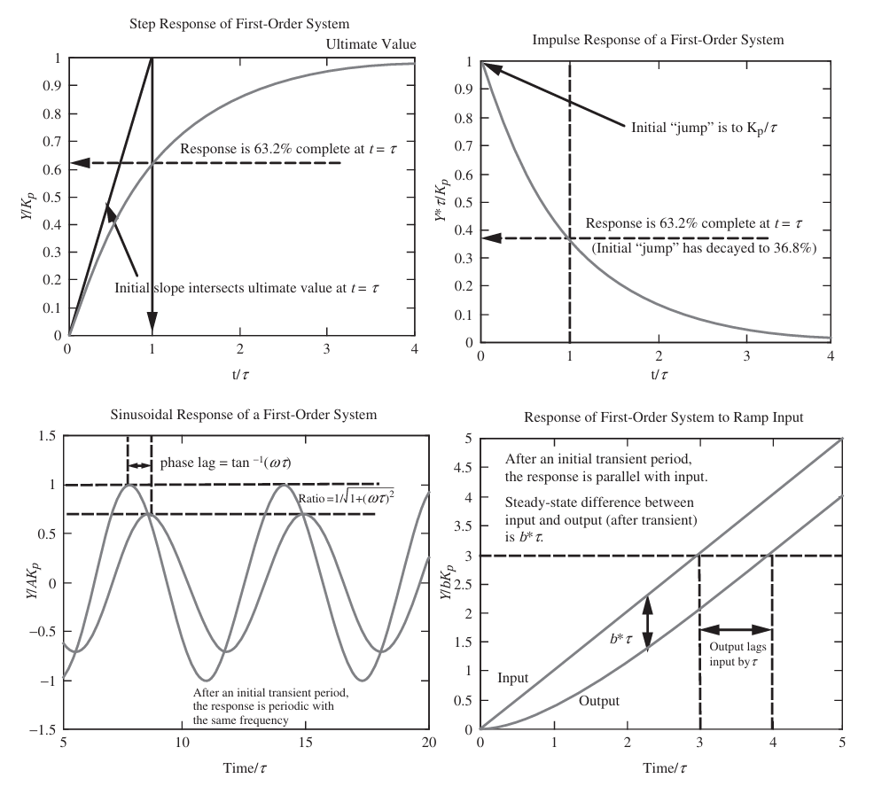